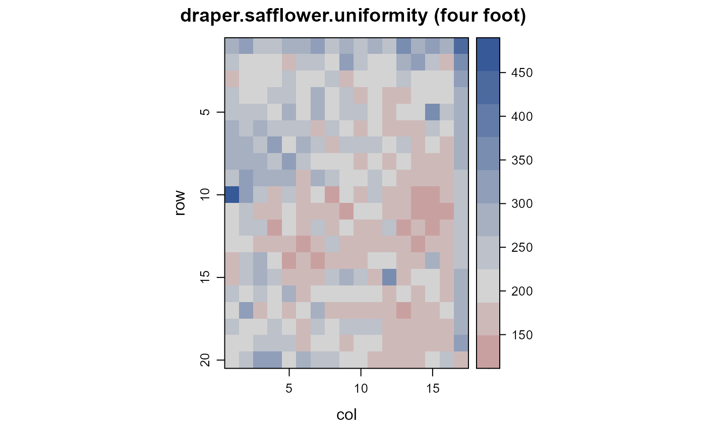
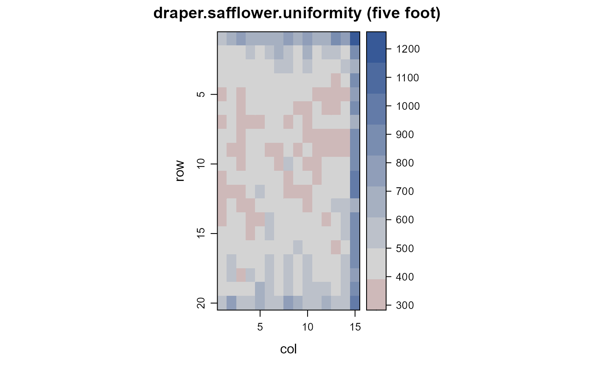
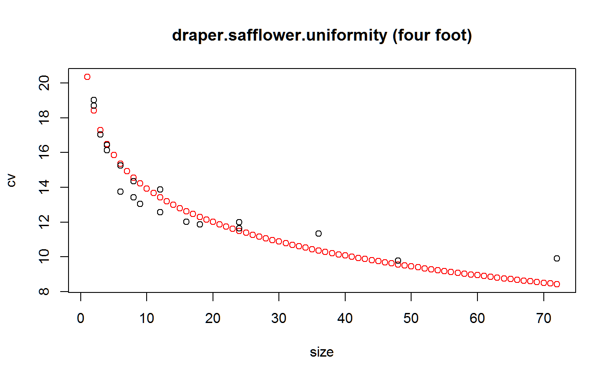

draper.safflower.uniformity.RdUniformity trial of safflower in Arizona in 1958.
data("draper.safflower.uniformity")
A data frame with 640 observations on the following 4 variables.
exptexperiment
rowrow
colcolumn
yieldyield per plot (grams)
Experiments were conducted at the Agricultural Experiment Station Farm at Eloy, Arizona. The crop was harvested in July 1958.
The crop was planted in two rows 12 inches apart on vegetable beds 40 inches center to center.
In each test, the end ranges and one row of plots on one side were next to alleys, and those plots gave estimates of border effects.
Experiment E4 (four foot test).
Sandy streaks were present in the field. Average yield was 1487 lb/ac. A diagonal fertility gradient was in this field. Widening the plot was equally effective as lengthening the plot to reduce variability. The optimum plot size was 1 bed wide, 24 feet long. Considering economic costs, the optimum size was 1 bed, 12 feet long.
Field width: 16 beds * 3.33 = 53 feet
Field length: 18 ranges * 4 feet = 72 feet
Experiment E5 (five foot test)
Average yield 2517 lb/ac, typical for this crop. Combining plots lengthwise was more effective than widening the plots, in order to reduce variability. The optimum plot size was 1 bed wide, 25 feet long. Considering economic costs, the optimum size was 1 bed, 18 feet long.
Field width: 14 beds * 3.33 = 46.6 feet.
Field length: 18 ranges * 5 feet = 90 feet.
Arlen D. Draper. (1959). Optimum plot size and shape for safflower yield tests. Dissertation. University of Arizona. https://hdl.handle.net/10150/319371
None
# \dontrun{ library(agridat) data(draper.safflower.uniformity) dat4 <- subset(draper.safflower.uniformity, expt=="E4") dat5 <- subset(draper.safflower.uniformity, expt=="E5") libs(desplot) desplot(dat4, yield~col*row, flip=TRUE, tick=TRUE, aspect=72/53, # true aspect main="draper.safflower.uniformity (four foot)")desplot(dat5, yield~col*row, flip=TRUE, tick=TRUE, aspect=90/46, # true aspect main="draper.safflower.uniformity (five foot)")libs(agricolae) libs(reshape2) # Remove border plots at either end and right side dat4 <- subset(dat4, row>1 & row<20) dat4 <- subset(dat4, col<17) dat5 <- subset(dat5, row>1 & row<20) dat5 <- subset(dat5, col<15) s4 <- index.smith(acast(dat4, row~col, value.var='yield'), main="draper.safflower.uniformity (four foot)", col="red")$unis4 # match Draper table 2, p 22#> Size Width Length plots Vx CV #> [1,] 1 1 1 288 2164.6567 22.5 #> [2,] 2 1 2 144 1490.8710 18.7 #> [3,] 2 2 1 144 1539.8152 19.0 #> [4,] 3 1 3 96 1236.1247 17.0 #> [5,] 4 2 2 72 1152.7394 16.4 #> [6,] 4 4 1 72 1107.6854 16.1 #> [7,] 6 1 6 48 805.0568 13.7 #> [8,] 6 2 3 48 991.4505 15.3 #> [9,] 8 4 2 36 879.1484 14.4 #> [10,] 8 8 1 36 768.9838 13.4 #> [11,] 9 1 9 32 724.5614 13.0 #> [12,] 12 2 6 24 672.9439 12.6 #> [13,] 12 4 3 24 819.2284 13.9 #> [14,] 16 8 2 18 615.4627 12.0 #> [15,] 18 2 9 16 598.8671 11.9 #> [16,] 24 4 6 12 578.4655 11.7 #> [17,] 24 8 3 12 613.4109 12.0 #> [18,] 36 4 9 8 548.4288 11.3 #> [19,] 48 8 6 6 408.3539 9.8 #> [20,] 72 8 9 4 417.8544 9.9## s5 <- index.smith(acast(dat5, row~col, value.var='yield'), ## main="draper.safflower.uniformity (five foot)", ## col="red")$uni ## s5 # match Draper table 1, p 21 # }